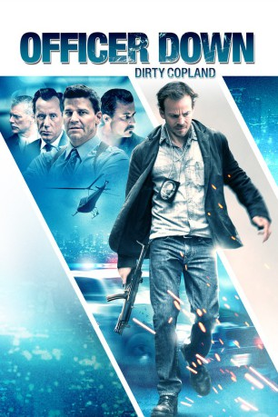
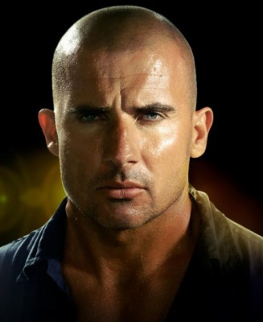
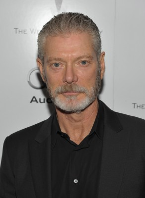
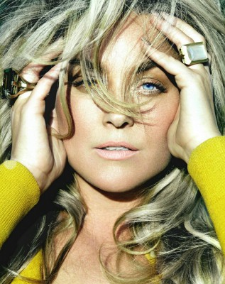
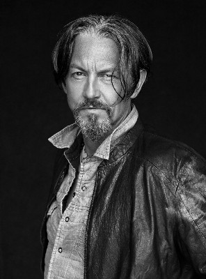
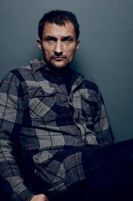
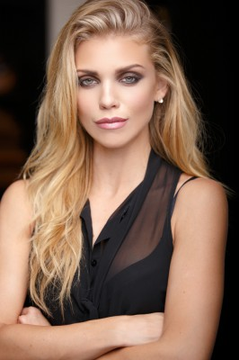
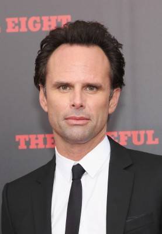
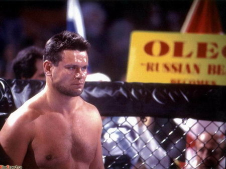

#6087 Officer Down - Dirty Copland
 
 IMDB-Wertung: 5.5 / 10
IMDB-Wertung: 5.5 / 10  Metascore: 0
Metascore: 0 
Ein Jahr ist es her, dass der verschrobene Detektiv Callahan bei einer Verhaftung, bei der einiges schief lief, angeschossen wurde. Ohne die Hilfe eines unbekannten Fremden hätte er wahrscheinlich nicht überlebt. Durch ihn hat er die Chance bekommen, mit seinem Leben noch einmal neu zu beginnen und einiges anders zu machen. Wer der Unbekannte war, weiß er aber bis heute nicht. Doch eines Tages wendet sich ein Mann in einer Bar an Callahan und sagt, er sei derjenige gewesen. Der Unbekannte braucht Callahans Hilfe: Die junge Stripperin Zhanna Dronov, die Tochter des Lebensretters, wird von einem Mann verfolgt und Callahan soll sich an dessen Fersen heften und ihn wenn nötig ausschalten. Der ehemalige Cop muss nun wieder zu Waffen und harten Mitteln greifen und wird dabei in einen Strudel aus Gewalt gezogen. Der undurchsichtige Barbetreiber und Drogendealer Walker, eine von Callahans Bekanntschaften aus alten Zeiten, scheint außerdem auch ein doppeltes Spiel zu spielen.
Jahr: 2013
Dauer: 93 Minuten
FSK: 16
Land: USA Studio: Anchor Bay FilmsTonspuren: DTS - ,
Untertitel: Deutsch,
Auflösung: 1080p (1920x816) Größe: 3819 MB
Genre: Drama, Krimi
Regisseur: Brian A Miller
Drehbuch: Robert Gosnell
Soundtrack:
Darsteller:
 Stephen Dorff als Detective David 'Cal' Callahan
Stephen Dorff als Detective David 'Cal' Callahan- Kaitlyn Black als Olivia
 Johnny Messner als McCallister
Johnny Messner als McCallister-  Dominic Purcell als Royce Walker
-  Stephen Lang als Lieutenant Jake 'Lieu' LaRussa
- David Boreanaz als Detective Les Scanlon
- Richard Brooks als McAlister's Lawyer
- Bree Michael Warner als Brogen
 James Woods als Captain Verona
James Woods als Captain Verona- Brette Taylor als A.D.A Loughlin
- Bea Miller als Lanie Callahan
-  Elisabeth Röhm als Alexandra Callahan
-  Tommy Flanagan als Father Reddy
-  Zoran Radanovich als Sergei Dronov / Ivan Zavalon
- Jas Anderson als Ellis Dracut
-  AnnaLynne McCord als Zhanna Dronov
-  Walton Goggins als Angel / Detective Logue
-  Oleg Taktarov als Oleg Emelyanenko
- Jenae Altschwager als Lisa
- Soulja Boy als Rudy
- Misha Kuznetsov als Sergei Dronov
- Laura Harris als Ellen Logue
- Marisa Pierini als Monica Logue
- April L. Hernandez als Coraline
 David Boston als Nightclub Patron , uncredited
David Boston als Nightclub Patron , uncredited- Abbie Dunn als Liz , uncredited
- Kamaliya als Katya , uncredited
- Greg Nutcher als Officer Stanly , uncredited
- Peter Vouras als Night Club Patron , uncredited
- Stephanie Owen als Cafe Patron
- Daniel Cooperbey als Night Club Patron , uncredited
 Paul Jude Letersky als Night Club Patron , uncredited
Paul Jude Letersky als Night Club Patron , uncredited
Datei: X:\2013(N-Z)\Officer Down - Dirty Copland (2013, FSK16, 1920x816).mkv seit 28.04.2017
Festplatte: HD 2013(I-Z)-2014(A-Z)
 Es gibt insgesamt 133 Filme in der Gruppe '2013(N-Z)'
Es gibt insgesamt 133 Filme in der Gruppe '2013(N-Z)'